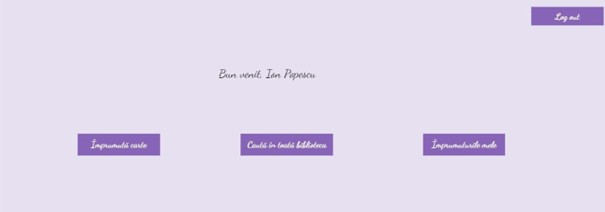
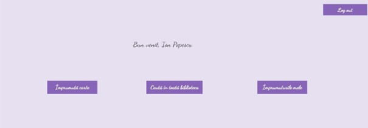
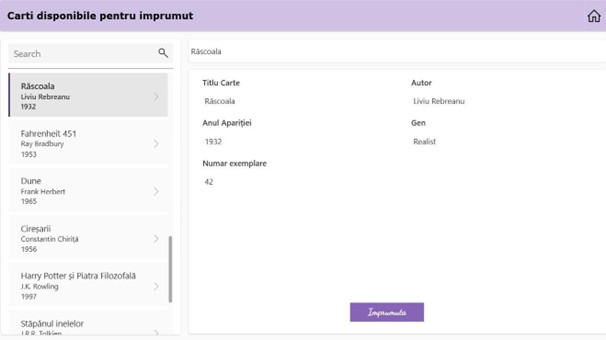
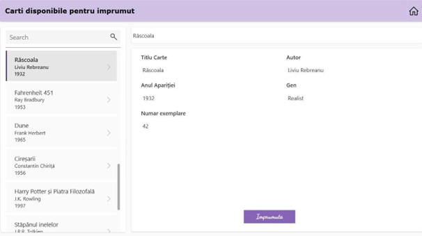
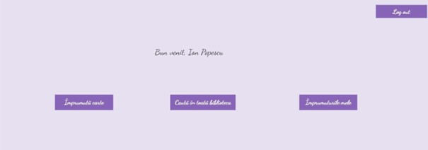
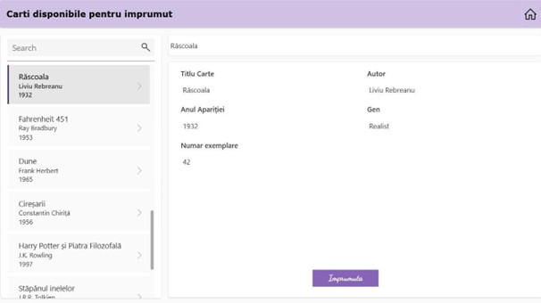

 

Student UTCB - Automatică și Informatică Aplicată
Acest proiect a fost realizat în PowerApps în semestrul 2 și simulează funcționalitatea unui sistem de gestiune pentru o bibliotecă digitală. Include formulare pentru adăugare și căutare de cărți, validări de câmpuri și interfață user-friendly conectată la un SharePoint List.

